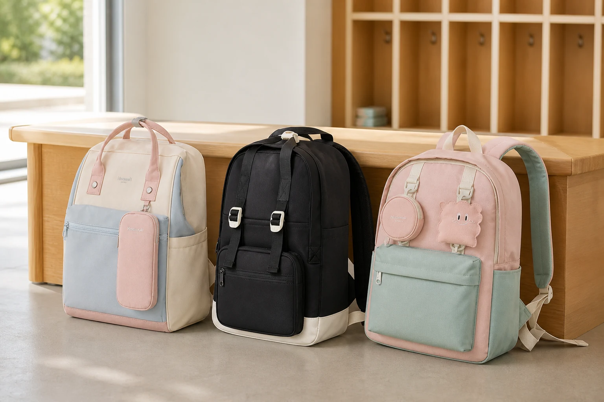

아이가 직접 꺼내고 닫아보는 신학기 가방

신학기 가방을 고를 때 보호자는 크기와 마감, 관리할 방법을 먼저 볼 수 있습니다. 아이는 색이나 장식, 자신이 좋아하는 모습에 관심을 둘 수 있습니다. 두 기준을 따로 두고 마지막에 타협하기보다 실제 준비물을 꺼내는 동작에서 같이 확인해볼 만합니다. 학교에서 무엇을 가져가야 하는지 안내를 읽고, 그 물건을 아이가 찾고 되담을 수 있는 구성이 필요합니다. 앞으로 사용할 시간을 기대하더라도 지금의 짐과 몸에 맞는지는 현재 조건에서 봐야 합니다.
학교에서 받은 준비물 안내와 실제 사용하는 책, 파일, 필통을 한 곳에 펼칩니다. 지난 학기의 목록과 같다고 생각하지 않고 현재 안내를 대조합니다. 아이가 자주 쓰는 물병이나 개인 소지품이 있다면 그것도 함께 놓습니다. 파일의 규격 이름과 물병의 용량 숫자만 적지 않고 실제 외형을 봐야 입구와 배치를 확인할 수 있습니다. 처음부터 모든 물건을 아이에게 정리하도록 맡기기보다 무엇이 어느 순간에 필요한지 같이 이야기하면 필요한 묶음이 보입니다.
현재 준비물을 담은 상태
가방을 비교할 때는 가장 큰 파일을 넣고 꺼내는 방향부터 확인할 수 있습니다. 파일이 입구에 걸리거나 다른 물건을 빼야 한다면 아이가 매일 사용할 동작으로 가능한지 봅니다. 책과 노트, 작은 도구가 같이 있는 상태에서도 같은지 대조하세요. 빈 가방의 외형과 실제 짐을 담은 모습은 다를 수 있습니다. 기기를 가져가야 하는 학교라면 해당 기기와 케이스의 외형을 기준으로 수납 안내를 따로 확인할 필요가 있습니다.
메어볼 수 있다면 아이가 실제 준비물을 담은 상태에서 가방을 올리고 내려보도록 합니다. 끈의 조절은 해당 제품 안내를 따르며 비틀리거나 한쪽에 짐이 몰린 곳이 있는지 먼저 봅니다. 보호자가 정한 길이만 맞추고 끝내기보다 아이가 어느 면에서 불편함을 느끼는지 물을 수 있습니다. 정해진 높이나 몸무게 비율을 이 글에서 일률적으로 적용하지 않습니다. 반복해서 불편함이 있다면 제품 조건과 필요한 별도 상담을 확인할 수 있습니다.
아이의 의견은 예쁘다는 반응뿐 아니라 사용 동작에서도 들을 수 있습니다. 여밈을 열 때 손이 어떻게 움직이는지, 필통을 꺼내려면 무엇을 먼저 빼는지 함께 봅니다. 학교에서 쓸 장소를 가정해 준비물을 한 번 꺼내고 다시 넣도록 할 수 있습니다. 익숙하지 않은 여밈이 있다면 제품 안내에 맞는 방법을 같이 확인합니다. 실제로 해야 할 동작을 연습하면 아이가 스스로 할 수 있는 부분과 도움을 받아야 할 부분을 구분하기 쉽습니다.
제품 예시로 Himawari No.1027 학생가방 제품 정보를 참고할 수 있습니다. 제품 정보에 표시된 가방 외부 크기는 가로 28 × 세로 40 × 폭 17cm입니다. 이 수치는 실제 파일과 입구를 대조할 자료이며 아이의 나이나 학년만으로 맞는 크기를 정하지 않습니다. 세트의 추가 구성은 선택한 판매 안내에서 확인하고 사용 방법을 따릅니다. 아이가 직접 다룰 수 있는지와 보호자가 관리할 범위를 현재 준비물과 함께 살펴보면 됩니다.

아이가 기억할 물건의 자리
수납 자리는 칸을 많이 나누는 목표보다 아이가 기억할 수 있는 순서로 정합니다. 매일 먼저 꺼내는 파일과 필통, 개인 소지품이 어디에 돌아갈지 함께 정할 수 있습니다. 비슷한 파우치가 여러 개면 아이가 열지 않고 구분할 방법이 있는지도 봅니다. 이름을 크게 적어 바깥에 드러내는 방식만 선택할 필요는 없습니다. 개인 표식을 사용한다면 어떤 정보가 외부에 보이는지 보호자가 확인하고 필요한 범위에서 정하면 됩니다.
물병을 함께 가져간다면 실제 용기의 외형과 가방의 해당 수납 안내를 대조합니다. 깊이와 입구 정보가 필요한 경우에는 판매자에게 문의할 수 있습니다. 아이가 넣고 꺼내는 동작이 가능한지와 사용 뒤 닫힘을 확인할 수 있는지도 같이 봅니다. 종이와 기기에 바로 닿지 않을 위치를 정하고 용기 자체의 사용 안내를 따릅니다. 포켓이 있다는 설명만으로 모든 물병이나 모든 상태를 해결한다고 정하지 않는 방식입니다.
하교 뒤에는 새로 받은 종이와 사용한 물건을 꺼내는 순서를 함께 만들 수 있습니다. 보호자가 확인할 안내와 아이가 다음날 다시 쓸 자료를 구분합니다. 아이에게 모든 칸을 완벽히 정리하는 규칙을 주기보다 새로 받은 종이를 정한 파일에 넣고, 사용한 물건을 꺼내는 동작부터 이어볼 수 있습니다. 실제 가방에 남은 것이 무엇인지 같이 살피면 어느 부분에서 도움이 필요한지도 보입니다. 다음날 준비물이 바뀌었다면 현재 안내와 다시 대조하면 됩니다.
취향과 관리 질문을 같이 두기
색과 디자인은 아이가 계속 사용하고 싶은 조건으로 듣습니다. 선택할 수 있는 옵션의 실제 사진과 이름을 대조하고 화면에서 보이는 색이 마음에 드는지 이야기합니다. 보호자는 같은 후보에서 소재와 관리 표시, 문의할 수 있는 안내를 확인할 수 있습니다. 아이의 취향을 기능보다 나중에 다뤄야 할 부분으로만 두지 않으면 선택 이유가 서로 분명해집니다. 원하는 모습과 실제 사용 동작이 함께 맞는 후보를 좁혀볼 수 있습니다.
제품의 마감은 눈으로 보이는 연결부와 바닥, 여밈을 살펴봅니다. 이상이 보이거나 움직임이 어려운 부분은 판매자에게 문의하고 보이지 않는 안전성이나 내구성을 직접 확인했다고 설명하지 않습니다. 소재 이름만으로 아이에게 안심할 수 있는 조건을 단정하지 않고 제공된 자료의 범위를 읽습니다. 관리와 수선에 관한 안내가 있는지 묻는 것도 사용할 물건을 선택하는 질문입니다. 아이와 보호자가 각각 확인할 범위를 구분하면 어떤 정보가 부족한지 알아보기 쉽습니다.
가방을 고른 뒤에는 첫 사용을 위한 자리만 정해둘 수 있습니다. 파일과 필통, 개인 소지품을 실제로 담고 아이가 한 번 열고 닫아보도록 합니다. 준비물이나 옷차림이 바뀌면 메고 벗는 동작과 배치도 다시 살펴보세요. 처음 정한 구성을 계속 지켜야 하는 규칙으로 만들 필요는 없습니다. 아이가 자주 찾는 물건과 새로 생긴 자료를 기준으로 조정하면 됩니다. 학교의 현재 준비물 안내, 아이의 사용 동작, 보호자의 관리 질문이 같이 이어질 때 다음 선택에서도 필요한 기준이 남습니다.